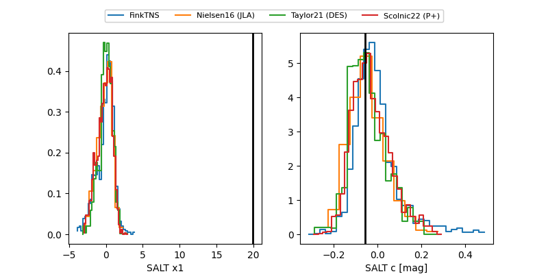

FINK: ZTF25abosdvf
Lasair: ZTF25abosdvf
ALeRCE: ZTF25abosdvf
TNS: 2025qmm
YSE: 2025qmm
ZTF25abosdvf (ztf,fink)
2025qmm (tns,yse)
ATLAS25hbe (atlas)
equatorial (ra, dec) = (74.5838,-17.51626)
galactic (l, b) = (217.1456,-32.63546)

last ztfr=19.61
3 ztfr detections